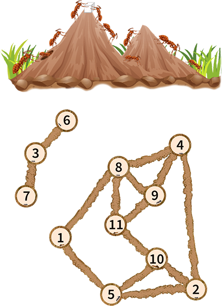
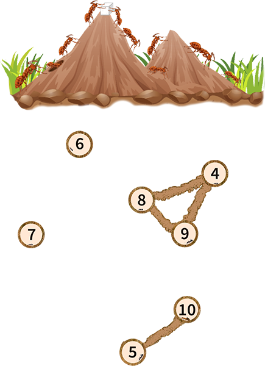

Pak Dengklek menemukan sebuah sarang semut di bawah tanah. Sarangnya terdiri dari $N$ ruangan yang dinomori dari $1$ sampai $N$ dengan setiap ruangan berisi seekor semut. Terdapat $M$ terowongan yang dinomori dari $1$ sampai $M$ dengan terowongan ke-$i$ menghubungkan ruangan $U_i$ dan $V_i$.
Semut merupakan serangga sosial yang suka bergotong-royong. Seekor semut dikatakan kesepian jika dan hanya jika semut itu tidak bisa menjangkau $2$ atau lebih semut lain (semut selain dirinya sendiri) dari ruangannya melalui satu atau lebih terowongan yang ada.
Pak Dengklek akan memilih pasangan bilangan bulat $(l, r)$ yang memenuhi $1 \leq l \leq r \leq N$. Kemudian, Pak Dengklek akan menghancurkan setiap ruangan $x$ yang memenuhi $x < l$ atau $x > r$ dan menyingkirkan setiap semut pada ruangan-ruangan itu. Tentunya, terowongan-terowongan yang terhubung dengan ruangan yang dihancurkan juga ikut dihancurkan.
Pak Dengklek khawatir dengan semut-semutnya, sehingga untuk suatu pasangan $(l, r)$, Pak Dengklek mendefinisikan nilai kesepian $f(l, r)$ sebagai banyaknya semut tersisa yang kesepian setelah penghancuran ruangan.
Pak Dengklek bosan dan ingin mencari jumlah nilai kesepian $f(l, r)$ untuk semua pasangan $(l, r)$ yang memenuhi $1 \leq l \leq r \leq N$. Bantulah Pak Dengklek!
Masukan diberikan dalam format berikut:
N M U1 V1 U2 V2 ⋮ UM VM
Keluarkan sebuah baris berisi sebuah bilangan bulat yang menyatakan jumlah nilai kesepian $f(l, r)$ untuk semua pasangan $(l, r)$ yang memenuhi $1 \leq l \leq r \leq N$.
11 14 1 5 1 8 2 4 2 5 2 10 3 6 3 7 4 8 4 9 5 10 8 9 8 11 9 11 10 11
128
Berikut adalah bentuk keseluruhan sarang semut.

Sebagai contoh, untuk $(l, r) = (4, 10)$, berikut adalah bentuk sarang semut yang tersisa.

Bisa dilihat bahwa:
Semut yang kesepian adalah semut pada ruangan $5$, $6$, $7$, dan $10$. Oleh karena itu, $f(4, 10) = 4$.
Sebagai contoh lain, untuk $(l, r) = (8, 11)$, berikut adalah bentuk sarang semut yang tersisa.
Bisa dilihat bahwa masing-masing semut yang tersisa bisa menjangkau $3$ semut lain, maka tidak ada semut yang kesepian. Oleh karena itu, $f(8, 11) = 0$.
4 3 2 4 1 2 2 3
10
Semua nilai $f(l, r)$ adalah sebagai berikut:
Oleh karena itu, jumlahnya adalah $1+2+0+0+1+2+0+1+2+1 = 10$.